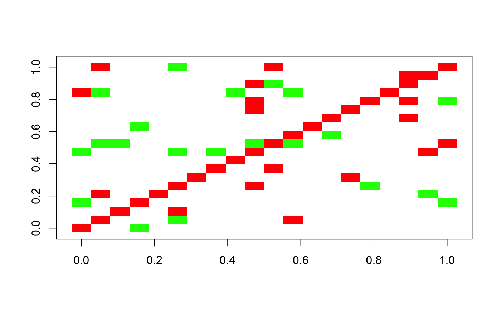

By default, the interaction strengths are set to -1 or 1. Negative values are plotted in red, positive in green. If scale.weight is true, the interaction strengths are scaled to lie in the range of [-1,1]. The option original suppresses any modification of the interaction strengths. If interaction strengths are scaled or the original ones are used, the method ggplot is recommended, since it adds a color legend. Alternatively, the interaction matrix can also be visualized as a directed network with method network. In this case, the igraph network object is returned, to allow for manual adjustment of the layout with igraph's tkplot function. Method network recognizes separate taxon name columns in unmerged taxon matrices. Method ggplot requires ggplot2 and reshape2.
plotA(A, method = "image", header = "", scale.weight = FALSE, original = FALSE, setNAToZero = FALSE, pos.link.color = "green", neg.link.color = "red", removeOrphans = TRUE, removeLoops = FALSE, returnNetwork = FALSE)
| A | interaction matrix |
|---|---|
| method | image, ggplot or network (ggplot requires ggplot2 and reshape2, image is therefore default), image and ggplot will plot the matrix, network will plot the network with igraph |
| header | the title of the plot (does not apply to method network) |
| scale.weight | scale interaction strengths between -1 and 1 (does not apply to method network) |
| original | plot original values (does not apply to method network) |
| setNAToZero | set missing values to zeros |
| pos.link.color | color of positive edges |
| neg.link.color | color of negative edges |
| removeOrphans | remove orphan nodes (method network) |
| removeLoops | remove loops (method network) |
| returnNetwork | return the network for manual adjustment with tkplot (method network) |
#> [1] "Adjusting connectance to 0.1" #> [1] "Initial edge number 400" #> [1] "Initial connectance 1" #> [1] "Number of edges removed 342" #> [1] "Final connectance 0.1" #> [1] "Final connectance: 0.1" #> [1] "Largest value: 0.474819332826883" #> [1] "Smallest value: -0.5"